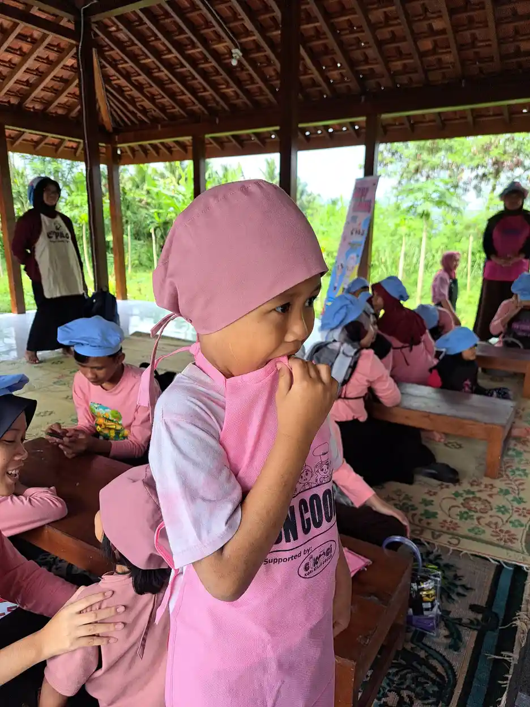
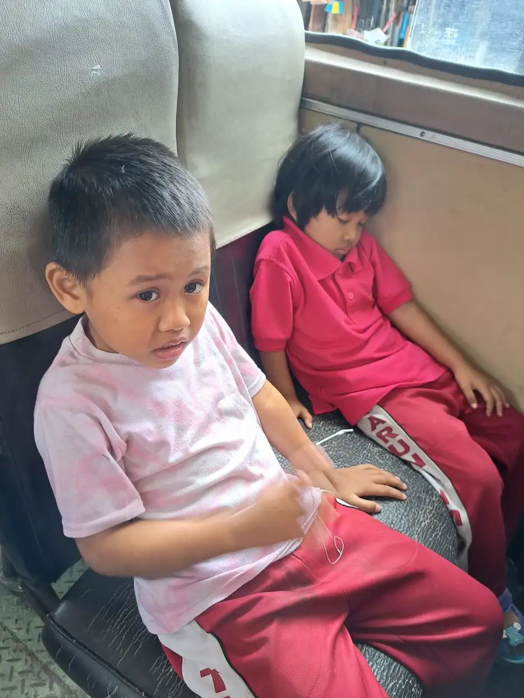

Jawaban singkat: Sensory seeking behavior anak adalah pola mencari input sensorik secara aktif, misalnya terus bergerak, mencari tekanan, menyentuh banyak benda, membuat suara, atau mencari rangsangan visual. Pola ini bukan diagnosis tunggal dan tidak otomatis berarti anak autis atau ADHD. Yang perlu dilihat adalah dampaknya pada keselamatan, belajar, bermain, tidur, makan, komunikasi, dan aktivitas harian.
Daftar isi
Pengertian sensory seeking
Setiap anak menerima informasi dari tubuh dan lingkungan melalui berbagai sistem sensorik. Selain penglihatan, pendengaran, sentuhan, penciuman, dan rasa, tubuh juga memproses informasi tentang gerak serta posisi sendi dan otot. Anak dapat mencari input pada satu sistem atau beberapa sistem sekaligus.
Istilah sensory seeking membantu menggambarkan pola yang terlihat, bukan menjelaskan seluruh penyebabnya. Perilaku yang sama dapat dipengaruhi oleh kebutuhan gerak, rasa bosan, upaya menenangkan diri, kesulitan komunikasi, tuntutan tugas yang terlalu tinggi, kurang tidur, rasa sakit, atau faktor lingkungan. Karena itu, konteks harus diperiksa sebelum menentukan dukungan.
Contoh perilaku yang mungkin terlihat

| Input yang dicari | Contoh yang mungkin terlihat | Pertanyaan konteks |
|---|---|---|
| Gerak dan keseimbangan | Sering melompat, berputar, berlari, atau bergoyang | Apakah terjadi saat menunggu, tugas sulit, atau sepanjang hari? |
| Tekanan dan tenaga otot | Mendorong benda, menabrak, memeluk erat, menggigit benda | Apakah anak sedang mencari cara berkomunikasi atau menghindari situasi? |
| Sentuhan | Menyentuh permukaan, tekstur, atau orang lain berulang | Apakah ada batas aman dan apakah anak memahami persetujuan? |
| Suara dan visual | Membuat suara, mengetuk, melihat benda berputar atau berkilau | Apakah suara atau cahaya mengganggu orang lain atau menghambat tugas? |
| Rasa dan mulut | Mengunyah benda, mencari makanan bertekstur tertentu | Apakah ada risiko tersedak, keracunan, atau masalah makan? |
Contoh ini bukan daftar diagnosis. Catat frekuensi, durasi, pemicu, hasil setelah perilaku, dan risiko yang muncul. Catatan singkat dari rumah dan sekolah dapat membantu profesional melihat pola.
Membedakan kebutuhan sensorik dari perilaku lain
Sensory seeking dan ADHD dapat tampak mirip karena sama-sama dapat melibatkan banyak gerak atau kesulitan menunggu. Namun, sensory seeking menggambarkan pola mencari input, sedangkan ADHD merupakan kondisi perkembangan dengan pola kurang perhatian dan/atau hiperaktivitas-impulsivitas yang menetap di lebih dari satu konteks serta dinilai melalui proses diagnostik. Tidak ada satu perilaku yang cukup untuk membedakan keduanya.
Perilaku mencari input juga dapat muncul saat anak lelah, cemas, lapar, sakit, kewalahan, atau belum memiliki cara komunikasi yang efektif. Sebelum menyimpulkan “anak butuh sensory diet”, periksa kebutuhan dasar, tuntutan aktivitas, cara komunikasi, dan pengaturan lingkungan.

Dukungan aman di rumah dan sekolah
Mulai dari perubahan yang rendah risiko
- Sediakan pilihan gerak yang aman dan sesuai usia, misalnya berjalan, peregangan, atau permainan motorik dengan pengawasan.
- Atur area agar tidak ada sudut tajam, benda panas, benda kecil yang mudah tertelan, dan jalur lari menuju jalan.
- Gunakan jadwal visual, aba-aba sebelum transisi, dan instruksi singkat bila perubahan aktivitas sering memicu perilaku.
- Sediakan cara meminta jeda atau bantuan melalui kata, gambar, gestur, atau perangkat komunikasi yang biasa digunakan anak.
- Catat apakah perubahan benar-benar membantu anak berpartisipasi, bukan hanya membuatnya diam.
Jangan memberi label tanpa melihat fungsi
Anak yang mengetuk meja mungkin sedang mencari suara, tetapi mungkin juga sedang menunggu, meniru teman, atau meminta perhatian. Tanyakan “apa yang terjadi sebelum dan sesudahnya?” daripada langsung memberi hukuman. Jika perilaku membahayakan, hentikan risiko dengan tenang dan ajarkan alternatif yang aman.
Kapan perlu asesmen profesional?
Mintalah konsultasi dokter anak, psikolog, atau terapis okupasi sesuai kebutuhan bila perilaku mengganggu aktivitas harian, menyebabkan cedera, mengganggu makan atau tidur, menimbulkan risiko tersedak atau keracunan, atau disertai kekhawatiran perkembangan lain. Layanan terapi okupasi biasanya menilai dampak kesulitan pada aktivitas sehari-hari, bukan hanya mengejar perubahan pada satu gejala sensorik.
Siapkan catatan singkat: aktivitas yang terpengaruh, contoh perilaku, pemicu, durasi, strategi yang dicoba, dan hasilnya. Tanyakan tujuan intervensi, manfaat yang diharapkan, risiko, jadwal evaluasi, serta bagaimana keluarga dan sekolah dilibatkan. AAP juga mengingatkan bahwa bukti terapi integrasi sensorik pada anak memiliki keterbatasan dan hasil penelitian belum seragam, sehingga keluarga perlu mendapat informasi seimbang.
Pertanyaan yang sering diajukan
Apa itu sensory seeking behavior anak?
Sensory seeking adalah pola anak yang aktif mencari input sensorik, misalnya gerak, tekanan, suara, sentuhan, atau visual. Pola ini perlu dipahami dalam konteks aktivitas dan partisipasi anak, bukan dijadikan diagnosis tunggal.
Apakah sensory seeking berarti anak autis atau ADHD?
Tidak. Sensory seeking dapat muncul pada anak dengan berbagai profil perkembangan, termasuk anak neurodivergen maupun anak lain. Perilaku ini tidak cukup untuk menegakkan diagnosis; bila mengganggu aktivitas, lakukan konsultasi dan asesmen yang sesuai.
Apakah semua anak perlu sensory diet?
Tidak. Program sensorik sebaiknya disusun berdasarkan asesmen dan tujuan aktivitas anak. AOTA mengingatkan agar intervensi berbasis sensorik tidak diberikan tanpa dokumentasi kesulitan pemrosesan atau integrasi sensorik.